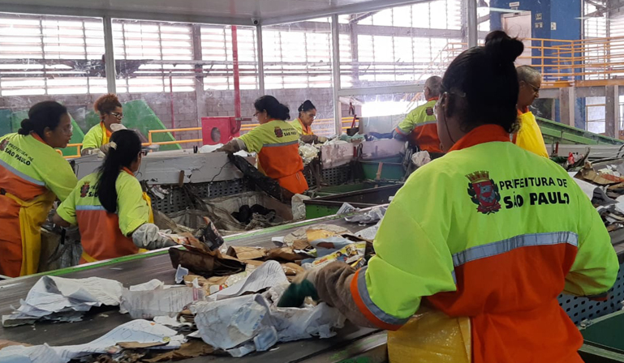

triagem
Saiba tudo sobre a triagem e o processo que o lixo passa
triagem o que é
O transporte de lixos recicláveis é um processo muito complicado e importante, no enfrentando de diversos desafios tantos diários como em processos, mas oferecendo muitos benefícios relevantes para a economia e para o meio ambiente. As empresas especializadas hoje em dia, surgiram com a missão de elevar e melhorar os serviços desse setor tão importante
A importância desse transporte vai além da simples movimentação de (vidros,papeis,plásticos e etc). Ele contribui tanto para a economia local quanto para a cidade em si e ate mesmo o estado, gerando renda para cooperados e empregos indiretos e para vários tipos de pessoas, além de reduzir os custos com destinação, processos e matéria-prima. As empresas desse setor de coleta de lixo fazem um papel fundamental no processo de aumento da durabilidade num processo desses produtos, coletando, arrumando e fornecendo matéria para a empresa reutilizar.
Mas mesmo assim o desafio continua, especialmente em grandes cidades como como São Paulo, onde a quantidade de lixos é exorbitante. A coleta de lixo reciclável é uma das principais chave para diminuir os impactos ambientais, mas tem bastante dificuldade pois a população não colabora nesses processo tão importante.

a forma como os coletadores de lixo reciclável são envolvidos na coleta é essencial, porém muitas vezes é desvalorizada e criticada pela sociedade. Eles enfrentam riscos todos os dias e a falta de compreensão da própria população. Educar a população e conscientizar são os passos fundamentais para melhorar esse cenário de julgamento sobre esses trabalhadores.
O processo de carregamento desses materiais não termina com a busca nas ruas. O lixo reciclável passa por um processo chamado triagem, onde é separado e preparado para reciclagem. O que não pode ser reutilizável segue para o incinerador ou ate mesmo para o descarte que será levado para aterros sanitários. As empresas de descarte desempenham um papel crucial nesse processo, recebendo dinheiro e lucro da venda do material reciclado.
O transporte de resíduos recicláveis é mais do que apenas movimentar materiais; é um elo vital na cadeia da reciclagem, promovendo a sustentabilidade econômica e ambiental. necessita continuar melhorando a educação do Brasil, para conscientizando os as crianças e jovens assim investindo nesse setor para assim termos um avanço na sociedade e no planeta terra